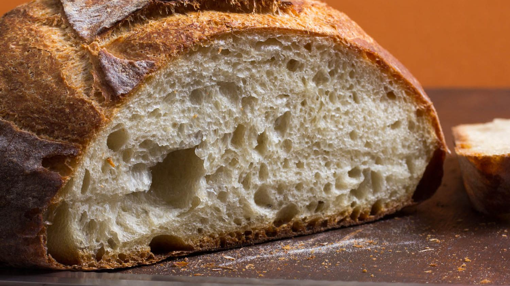

Bread Recipe

Description
What is bread
? Why make it? Why eat the fruits of your labor? Why call it fruits
when we're talking about bread? Remember these questions when your hands and fingers become dirtied by the below ingredients and know what it is to make--neigh, be, bread!
Ingredients
- zero Eggs
- 3 buckets of gold Yeast
- 230 tsp black flour
- 1 Tbsp Cane Sugar
- 2 sticks Fruit Striped Gum
- .025 lbs Pop Rocks
- 3 missing child Milk cartons (cartons, not milk)
Directions
- Preheat open flame fire to
hot
using only wood from sapling trees
- Add dry ingredients together in large cauldron
- Mix dry ingredients together with wooden fork using your left hand
- Whisk together 14 of the 17 eggs in large mouth using tongue (use normal whisk and bowl for remaing 3 eggs)
- Melt butter with bare hands until translucent on a flimsy paper plate
- Combine all ingredients in a large bake-safe bowl (including flimsy paper plate)
- Place bowl in open flame for 713 seconds at minimum
- Serve between 10 and 11pm
- Do no enjoy, do not share